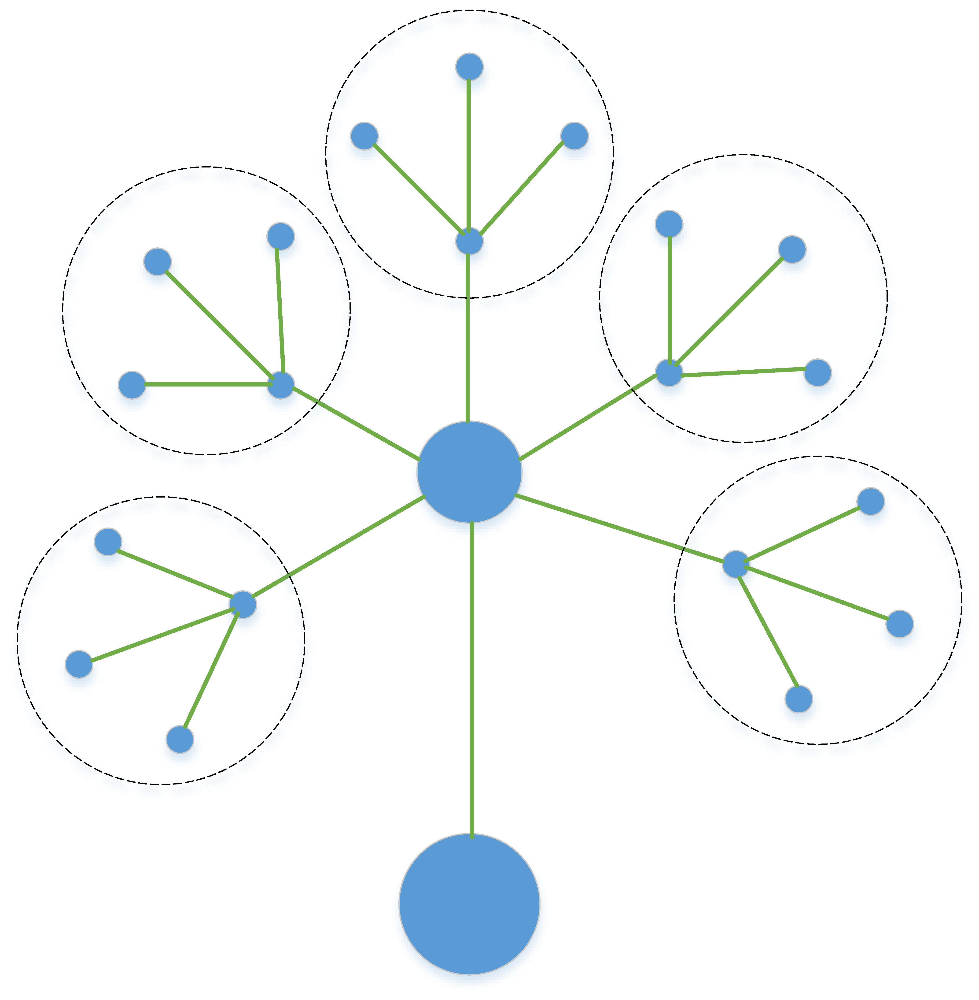

第三个DIV盒子
第四个DIV盒子

Welcome! My name is Li Peng and I am a financial economist at the Federal Deposit Insurance Corporation in Washington, D.C. and also teach Text Mining for Economics and Finance at the University of Maryland.
我的研究兴趣是分布式优化、智能电网和水电混合系统等。
My research interests lie in financial economics. I've researched how banks cause credit frictions to the real economy, how they interact with regulators and how their CEOs/CFOs words can be used to proxy the uncertainty banks face. Helping me along the way, I've been learning how to apply recent techniques in machine learning and natural language processing to these economic problems. Feel free to look at my research and my tutorials to learn more!
NOTE: This is a personal webpage and any views or information reflect solely the author and are not the views of the FDIC.